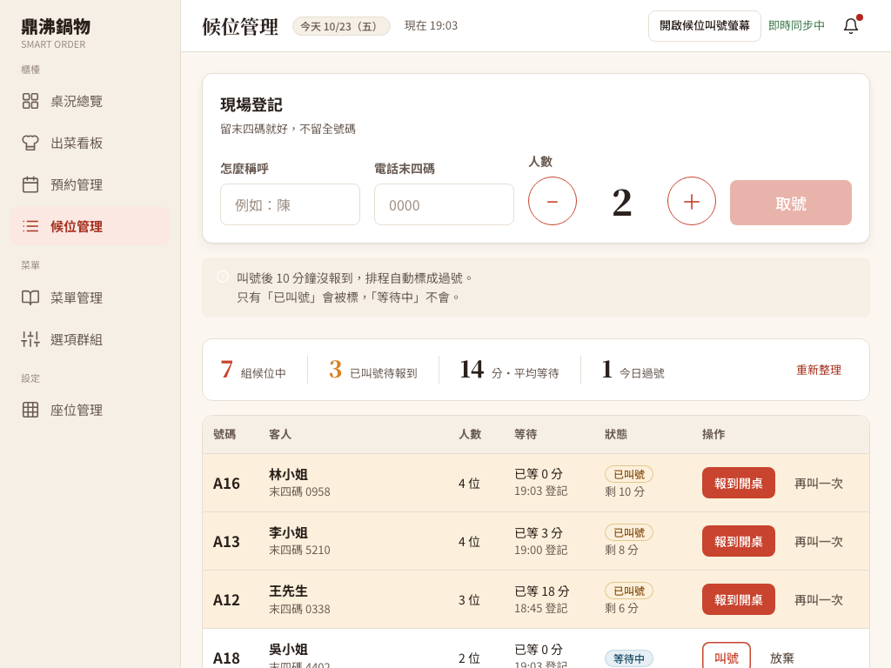
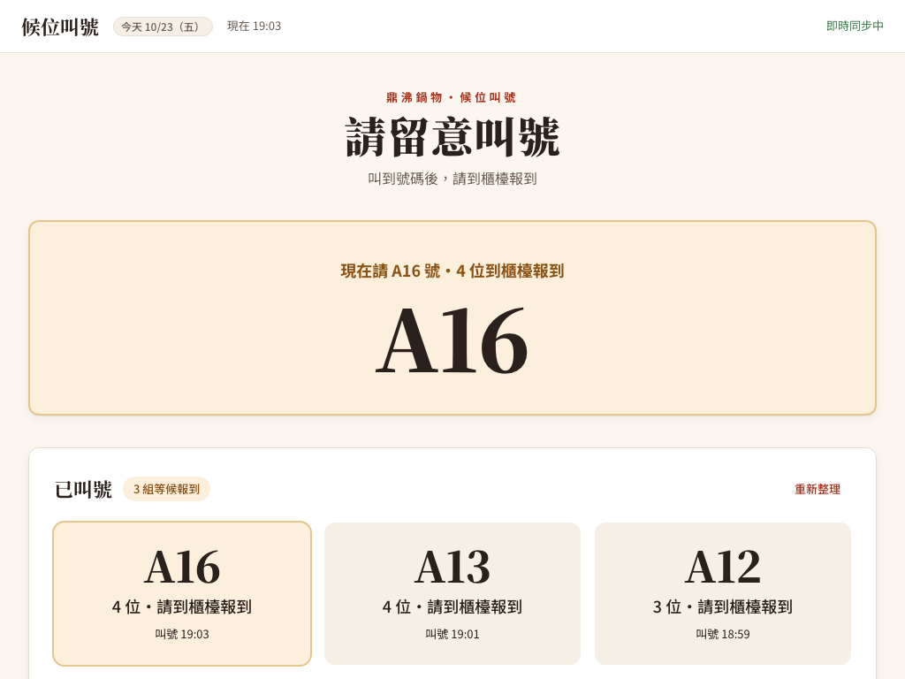

候位的四個錯誤、補齊的功能，與整合時的回修
- 修正原本的錯誤：同一組候位可以同時入座兩張桌、登記資料沒有檢查、兩台櫃檯同時取號會拿到同一個號碼、「今日過號」和「平均等待」永遠是 0。
- 補上規格裡的基本功能：叫號即時推到候位叫號螢幕、「再叫一次」真的通知、叫號螢幕頁、店長手動執行過號、今日統計 API。
- 資料庫：新增號碼序號表、兩個唯一索引、過號時間欄位，並附上給既有資料庫用的升級腳本。
- 整合時找到的問題：推播在大量同時操作時會把資料庫連線用光；S-10 在 1024 像素寬時版面被撐破。兩者都已修正。
原本的錯誤是這篇的學習重點；「補上的基本功能」是規格裡有、但原本還沒接好的部分，這次直接補齊，屬於整合成果，不是作者的缺失。不在這篇範圍的：座位設定（桌號、容量、停用）、用餐超時與待清理提醒，以及進階的「過號後自動叫下一組」。
兩台櫃檯、一個門口螢幕、十幾組在等的客人
店裡客滿，門口排了十幾組。櫃檯有兩台平板（我們叫它們櫃檯 A、櫃檯 B），兩個店員同時在幫客人登記、叫號和帶位。門口還有一台螢幕，叫到號碼時要大大地顯示出來。
候位的一生只有幾種走法：
| 現在的狀態 | 可以做的事 | 做完變成 |
|---|---|---|
WAITING（等待中） | 叫號 | CALLED（已叫號），記下叫號時間 |
WAITING 或 CALLED | 放棄（客人不等了） | ABANDONED（已放棄） |
CALLED，而且叫號後還沒滿 10 分鐘 | 報到開桌 | SEATED（已入座），綁定一筆用餐紀錄 |
CALLED，叫號後滿 10 分鐘 | 排程自動標記 | EXPIRED（已過號），記下過號時間 |
SEATED／ABANDONED／EXPIRED | 什麼都不能做 | 這三個是「終態」：結局已定，不能再改 |
這張表看起來很簡單，難的地方在於：兩台櫃檯會同時對同一組客人按按鈕，排程也會在背景同時跑。程式要保證不管誰先誰後，每組客人最後都只有一個結局。
四個錯誤，都是「先查再做」中間被插隊
這四個問題有一個共同點：程式先「查」資料庫，判斷可以之後再「做」修改。查和做之間只差幾毫秒，但這幾毫秒裡另一個請求可能已經改掉資料了。這種情況叫做競態（race condition）。
錯誤 1：同一組客人入座了兩張桌
入座時用一般的 findById 讀候位，看到 CALLED 就開桌。櫃檯 A 選 A05、櫃檯 B 選 B02，兩個請求幾乎同時送出：兩邊都讀到「已叫號」，各自鎖住不同的桌，於是開出兩筆用餐紀錄。候位資料最後只記得其中一筆，另一張桌白白被占住。
叫號、放棄和過號排程也沒有共用同一把鎖，可能把「已入座」改成「已過號」，或讓已過號的客人又入座。另外 WAITING 也能直接入座，跳過「先叫號」這一步。
用時間線看最清楚：
19:00:00.000 櫃檯 A 讀到 A13 是
CALLED，鎖住 A05 桌。19:00:00.003 櫃檯 B 也讀到 A13 是
CALLED（A 還沒存檔），鎖住 B02 桌。兩邊鎖的是不同的桌，所以誰都不用等誰。19:00:00.020 兩邊都建立用餐紀錄、把 A13 改成
SEATED。結果：一組客人、兩張桌、兩筆用餐紀錄。
錯誤 2：登記資料沒有在伺服器檢查
畫面上有擋，但 API 收到什麼就存什麼：空白姓名、電話不是四碼數字、人數 0、負數、21 人以上，甚至缺欄位，都可能寫進資料庫或變成看不懂的資料庫錯誤。畫面只是其中一個入口，任何人都能直接呼叫 API，所以規則一定要在後端再檢查一次。
錯誤 3：兩台櫃檯同時取號，拿到同一個號碼
找「最後一筆候位」的號碼，例如 A14，加一變成 A15。兩台櫃檯同時取號時，都讀到 A14，都發出 A15。資料庫的號碼欄位也沒有設定「不可重複」，所以兩筆 A15 都存進去了。
門口螢幕叫「A15」，兩組客人同時走過來。櫃檯沒辦法從號碼分辨是哪一組。
錯誤 4：「今日過號」和「平均等待」永遠是 0
候位清單 API 只回傳「等待中」和「已叫號」的客人（這是對的，清單本來就只列還要處理的人）。但畫面拿同一份清單去算「今天過號幾組」和「已入座的平均等待時間」，而過號和入座的客人根本不在清單裡，所以算出來永遠是 0。
讓「查」和「做」變成不能被插隊的一步
1. 同一組候位，所有狀態改變都排同一條隊
叫號、放棄、入座、過號，這四個動作第一步都改成用 SELECT ... FOR UPDATE 讀這筆候位。它會在這筆資料上加一把資料列鎖（row lock）：誰先拿到鎖誰先做，後來的請求要等前一個存檔完成，拿到鎖後重新讀到的就是最新狀態。
回到剛才的時間線：櫃檯 B 這次會停在「讀 A13」這一步等櫃檯 A。等 A 存檔後，B 讀到的是 SEATED，於是收到 409 WAITLIST_STATUS（「這組候位已經入座了」），B02 桌完全沒被動到。
- 鎖的順序固定：入座一律先鎖候位、再鎖桌位。如果有的程式先鎖桌、有的先鎖候位，兩個請求可能各拿一把、互相等對方，變成死結（deadlock）。全專案只有這裡會同時拿這兩把鎖，而且順序固定。
- 規則在鎖裡面檢查：拿到鎖之後才判斷「是不是
CALLED」、「叫號是否還沒滿 10 分鐘」、「是否已經有用餐紀錄」。 - 開桌失敗就整筆取消：如果選的桌剛被別人開走（
409 TABLE_OCCUPIED）或坐不下（400），整個交易回到原點，候位仍是CALLED，不會留下做一半的資料。 - 資料庫最後一道保險：
dining_session.waitlist_id加上唯一索引（UNIQUE），就算將來有人寫錯程式，資料庫也不允許兩筆用餐紀錄指向同一組候位。
2. 取號改用「只有一個把手的抽號機」
新增一張只有一列資料的表 waitlist_ticket_counter，記錄「下一個號碼」。取號時先鎖住這一列、拿號碼、把它加一，再新增候位。同一時間只有一個請求能拿到這把鎖，就像抽號碼牌的機器只有一個把手，一次只能抽一張。
waitlist.ticket_no 也加上唯一索引。號碼是從序號表發出、而不是「找最後一筆再加一」，所以就算刪掉或放棄中間的候位，號碼也不會被重複使用。
3. 登記資料在伺服器檢查
- 姓名必填，去掉前後空白後不能是空的，也不能超過 50 個字（資料庫欄位的長度）。
- 電話只收末四碼，必須剛好是 4 個數字。
- 人數必須有值，而且是 1 到 20 位。
- 不合規則回
400 VALIDATION_FAILED，而且不會用掉號碼：檢查放在拿號碼之前。
4. 叫號的 10 分鐘期限，前後端用同一套規則
規格寫「叫號後 10 分鐘沒報到就過號」。程式裡有兩個地方要判斷這條線，必須剛好互補，不能有重疊或空隙：
- 入座和再叫一次：
現在 < 叫號時間 + 10 分鐘才允許，否則回409 WAITLIST_EXPIRED。 - 過號排程：
現在 ≥ 叫號時間 + 10 分鐘才標記EXPIRED，同時記下expired_at（過號時間）。 - 「再叫一次」不延長期限：它會再推播一次叫號，但不改叫號時間。否則店員一直按「再叫一次」，客人就永遠不會過號。這是依 M2 規格「叫號後 10 分鐘」判讀的。
- 「等待中」不會被過號：只有已叫號的客人會被排程標記。
- 所有時間都用台北時區（
Asia/Taipei）計算，排程的 cron 也指定台北時區。
5. 今日統計改由後端計算
新增 GET /api/admin/waitlist/today-summary：以台北的「今天」為範圍（依登記時間），回傳各狀態的組數與平均等待分鐘數。平均等待＝今天已入座的每一組「入座時間 − 登記時間」的平均。畫面上的「今日過號」和「平均等待」改讀這支 API；「組候位中」和「已叫號待報到」則直接從清單算，這樣跟下方清單的列數永遠一致（包含前一天登記、今天還沒處理的客人）。
主要程式檔案
backend/src/main/java/tw/ispan/smartorder/service/WaitlistService.java：取號、驗證、叫號、放棄、入座、過號與今日統計；所有狀態改變都先鎖候位。backend/src/main/java/tw/ispan/smartorder/repository/WaitlistRepository.java、WaitlistTicketCounterRepository.java：FOR UPDATE鎖定查詢、過號候選、今日資料查詢。backend/src/main/java/tw/ispan/smartorder/service/WaitlistNotifier.java：交易提交後發送WAITLIST_CALLED／WAITLIST_UPDATED。backend/src/main/java/tw/ispan/smartorder/controller/WaitlistSchedulerController.java、scheduler/WaitlistScheduler.java：店長手動過號 API 與每分鐘排程。backend/db/schema.sql、backend/db/seed.sql、backend/db/migrate_waitlist_flow.sql：序號表、唯一索引、過號時間欄位，以及既有資料庫的升級腳本。frontend/src/features/admin/waitlist/WaitlistManagement.jsx、WaitlistSeatDialog.jsx、WaitlistDisplay.jsx：S-10 候位管理、S-10b 選桌對話框、候位叫號螢幕。frontend/src/services/realtime/useWaitlistSocket.ts、frontend/src/services/api/waitlist/waitlistApi.ts：候位推播連線與 API 呼叫。
叫號要真的「叫得到人」
M2 規格 2.11 寫「櫃檯可叫號，WebSocket 推到候位螢幕」，2.13 寫「叫號後 10 分鐘未報到，排程自動標記」並搭配手動觸發的管理 API。這些原本還沒接好：叫號只改資料庫、「再叫一次」只在瀏覽器主控台印一行字、沒有叫號螢幕、也沒有手動過號的入口。這次補上：
即時推播
叫號時推 WAITLIST_CALLED（號碼與人數）；任何候位變動推 WAITLIST_UPDATED（目前等待組數）到 /topic/waitlist，也同步到桌況頁用的 /topic/counter。只有櫃檯與店長能訂閱。推播一律在交易成功提交之後才送，不會出現「螢幕叫號了，但資料其實沒存進去」。
候位叫號螢幕
新頁面 /admin/waitlist/display，從 S-10 的「開啟候位叫號螢幕」按鈕開在另一個視窗，可以拖到門口的螢幕；櫃檯自己的管理頁保持不動。叫號時大字顯示 8 秒，下方列出還在 10 分鐘內的已叫號組別；畫面沒有後台側欄，客人碰不到其他功能。
再叫一次
按鈕真的呼叫後端，後端在鎖內確認還在期限內，才再推播一次叫號；不改叫號時間，所以不會延長期限。
店長手動過號
POST /api/admin/scheduler/expire-waitlist，只有 MANAGER 能用（COUNTER 會收到 403）。它跟每分鐘的排程呼叫同一段程式，demo 時不用真的等 10 分鐘。
多台櫃檯的畫面也會跟著同步：櫃檯 A 取號、叫號、入座或放棄，櫃檯 B 在一秒內就看到變化，不用等 30 秒的定時重抓。連線中斷時畫面會顯示「連線中斷，重新連線中」，重新連上後會立刻重抓一次資料，避免漏掉斷線期間的變化。
測試跑出來的兩個問題，和審查提出的四個改進
問題 A：同時 20 個人取號，每個請求卡 30 秒
實際測試「20 個請求同時取號」時，請求全部卡住，30 秒後逾時失敗。後端紀錄寫著：HikariPool-1 - Connection is not available ... (total=10, active=10, idle=0, waiting=1)。
先了解連線池（connection pool）：後端不會每次都重新連資料庫，而是事先開好 10 條連線輪流借用，就像停車場只有 10 個車位。原本的推播在「交易提交後」要再讀一次資料庫（查等待組數），會再借一條連線。問題是這時候原本那條連線還沒歸還。
10 個請求各占 1 個車位，提交後每個都要再借第 2 個車位才能離開。車位已經全滿，大家都在等別人先離開，誰也走不了，直到 30 秒逾時。
提交後不在原本的請求裡讀資料，而是把「讀資料＋推播」交給一個專門的背景執行緒排隊處理。請求會先歸還連線，背景執行緒再借一條來讀。只用一個背景執行緒，推播就會照提交順序送出。
修正後，同樣 20 個同時取號約 3 秒內全部完成，號碼連續、沒有重複。推播如果失敗只記錄在後端紀錄裡，不會讓已經成功的取號回錯誤；否則店員以為失敗再按一次，就多了一筆重複候位。畫面本來就有 30 秒定時重抓，可以補回漏掉的推播。
桌況推播（TableStatusNotifier）也是同樣的寫法，它是上一篇桌位整合時加的，不是原作者的程式。候位入座時會同時觸發這兩個推播，所以這次一併修正。這也說明：沒有實際測試大量同時操作，這種問題光看程式碼很難發現。
問題 B：S-10 在 1024 像素寬時版面被撐破
UI 規格寫店家端從 1024 像素寬開始支援。實測發現左側側欄占掉 208 像素後，「登記表單」加上「候位表格」的寬度放不下，整頁被撐出橫向捲軸，狀態標籤還被擠成直排的「已／叫／號」。這個欄寬是改動前就有的，但這次改的正是這一頁，所以一起修：寬度未滿 1280 像素時，登記表單改成一排放在上方、表格放在下方；1280 像素以上維持原本的左右兩欄。
獨立程式審查提出的四個改進
- 統計跟清單對不上：「組候位中」原本也只算今天登記的，前一天留下來的等待中客人會在清單出現、卻不算進數字。改成直接從清單計算。
- 選桌失敗後對話框還留著舊資料：選的桌被別台開走時，現在會重抓空桌清單，並把選取清空、讓店員自己重選，不會默默換成另一張桌（審查複查時特別指出：自動換桌再加上「確定開桌」按鈕的位置不變，店員可能順手開到沒選過的桌）。這組客人如果已經被別台入座或已過號，對話框直接關閉並說明原因。送出中按 Esc 或點背景也不會關掉對話框。
- 推播失敗不該讓操作回 500：見上面問題 A 的修法。
- 叫號螢幕的開法：改成開新視窗、移出後台版型，理由見上面的「候位叫號螢幕」。
另外，入座被拒時的訊息改成依實際狀態說明：「這組候位還沒叫號，請先叫號」、「這組候位已經入座了」或「這組候位已經結束（放棄或過號）」，店員一看就知道發生什麼事。
你可以照著做一次
以下是這次實際跑過的驗收。請使用自己的本機測試資料庫，不要對正式資料操作。用 SQL 把叫號時間往前推的步驟，是為了不用真的等 10 分鐘；紀錄裡都有標明。
先看權限。不帶員工登入憑證呼叫
GET /api/admin/waitlist、/today-summary和登記 API，都應回401。用 COUNTER 呼叫手動過號POST /api/admin/scheduler/expire-waitlist應回403，換 MANAGER 則回200。送不合規則的登記。試空白姓名、51 個字的姓名、電話
12a4或 5 位數、人數 0／−1／21／空值、整個空白內容，都應回400 VALIDATION_FAILED。查資料庫：候位筆數和waitlist_ticket_counter.next_no都沒有變。20 個請求同時取號。用程式同時送出 20 個登記請求。確認全部回
200，號碼是連續的 20 個數字，沒有重複；序號表剛好加了 20。再試著用 SQL 直接新增一筆重複號碼，資料庫應該拒絕。同一組候位，兩張桌同時入座。先叫號，再同時送出兩個入座請求、各選一張不同的空桌。確認一個
200、一個409；資料庫只有一筆用餐紀錄指向這組候位，兩張桌只有一張變成用餐中。這次跑了 2 輪。其他同時操作。對已叫號的候位同時送「入座」和「放棄」（3 輪）、對等待中的候位同時送「叫號」和「放棄」（3 輪）、在剛好快滿 10 分鐘時同時送「入座」和「手動過號」（3 輪）。每一輪最後都只有一個結局，沒有出現 500 錯誤，也不會「既入座又過號」。
終態不能再改。對已入座、已放棄、已過號的候位再叫號、放棄或入座，都應回
409 WAITLIST_STATUS。10 分鐘期限。把一筆已叫號候位的叫號時間往前推 11 分鐘，入座和再叫一次都應被拒絕；店長手動過號後，這筆變成
EXPIRED，expired_at有值。往前推 9 分鐘的那筆不會被過號，而且還能再叫一次。再叫一次前後，資料庫的called_at完全相同。今日統計。用 SQL 依台北的今天分狀態計數、算入座平均等待，跟
today-summary回傳的數字逐一比對。瀏覽器實際操作（1024 像素寬）。開兩個櫃檯頁面（一個 COUNTER、一個 MANAGER），再從 S-10 按「開啟候位叫號螢幕」開出第三個視窗。在櫃檯 A 用表單取號、叫號、再叫一次、報到開桌、放棄；確認櫃檯 B 和叫號螢幕都在一秒內更新，沒有重新整理頁面。
選桌失敗的兩種情況。(1) 對話框選好桌後，用 API 從別台把那張桌開走，再按開桌：收到 409，錯誤顯示在對話框裡，空桌清單重抓、那張桌消失，畫面沒有自動選別張桌、按鈕顯示「請選一張桌」；店員自己點另一張後成功入座。(2) 對話框開著時，別台先讓這組入座：按開桌後對話框關閉，S-10 顯示「這組候位已經入座了」。另外確認開桌請求送出中按 Esc、點背景都不會關掉對話框。
升級既有資料庫。在另一個暫存資料庫匯入改動前的
schema.sql＋seed.sql，執行migrate_waitlist_flow.sql：序號從 A15 接著發，兩個唯一索引建立，舊的過號資料expired_at維持空值（沒辦法推回真正的過號時間，所以不亂填）。再故意塞一筆重複號碼重做一次：腳本在第一句就停下，資料一筆都沒被改。
提交與驗證紀錄
程式版本：Git commit e4c9693。
HTTP 與資料庫檢查
候位專項 128 項全部通過：權限、登記驗證、20 筆同時取號、同一組兩張桌、各種同時操作、終態、10 分鐘期限、資料庫唯一索引、今日統計。另外重跑 36 項既有基線檢查也全部通過（紀錄裡一起列出，合計 164 項）。查看完整 HTTP 紀錄。
瀏覽器操作檢查
候位專項 26 項全部通過：三個視窗的即時同步、叫號螢幕、表單取號、再叫一次、報到開桌、選桌失敗的兩種情況、放棄、過號；另有 15 條既有頁面路由檢查，合計 41 項。三個頁面都沒有頁面錯誤或 5xx 回應。查看完整瀏覽器紀錄。




WAITLIST_CALLED 推播後大字顯示號碼，下方列出 10 分鐘內的已叫號組別。後端 clean package（清除舊產物後重新打包）編譯 229 個來源檔通過；4 個既有測試類只編譯、沒有執行，這次也沒有新增單元測試。前端型別檢查、oxlint 與建置（425 個模組）通過。獨立程式審查第一輪沒有 P1／P2，四個 P3 都已修正；修正與新發現的連線池問題再經同一位審查者複查。
測試在隔離的 MySQL 5.7 容器進行，沒有使用正式資料。「叫號時間往前推」是用 SQL 調整的測試手段，紀錄名稱裡都有標明。沒有發送任何簡訊或 email；叫號只透過 WebSocket 推到店內畫面。
前輩回饋、報告亮點與履歷
技術前輩的建議
候位是很好的「狀態機」練習。下次寫這類功能前，先畫出「狀態 × 動作 → 新狀態」的表（就像本文第一張表），把「誰能做、什麼時候不能做、失敗回什麼錯誤碼」都寫進去，再開始寫程式。寫程式時，每個改狀態的方法第一行都是「鎖住這筆資料」，這樣就不會漏掉。
「找最後一筆再加一」是新手最常見的取號寫法，在只有一個人操作時永遠不會出錯，所以很難發現。只要系統會有兩個人同時操作，就要問自己：「如果兩個請求同時走到這一行會怎樣？」最好的答案是用測試真的同時送出去看結果。
推播要在交易提交後才送，這點原本的設計是對的；這次多學到的是：提交後的程式還占著資料庫連線，裡面不能再借連線，否則量一大就會卡住。
這個功能用到的技術
- Spring Boot 交易管理（
@Transactional、隔離層級READ_COMMITTED） - 悲觀鎖：MySQL 的
SELECT ... FOR UPDATE資料列鎖、固定鎖順序避免死結 - 資料庫唯一索引（UNIQUE）當最後一道防線；不破壞歷史資料的升級腳本
- 狀態機設計與終態保護
- Spring 排程
@Scheduled（cron＋台北時區）與手動觸發 API - WebSocket＋STOMP 即時推播、交易提交後回呼（afterCommit）、背景執行緒
- HikariCP 連線池的運作與用盡問題
- React：請求世代與卸載保護、防連點、TanStack Query 快取失效重抓
- 併發測試（Python 同時送出請求）與 Playwright 多視窗瀏覽器自動化測試
專題報告可以這樣講
- 先放「兩台櫃檯同時讓 A13 入座」的時間線，問台下：「這樣會發生什麼事？」再展示加鎖後的時間線。
- 放狀態轉換表，說明三個終態為什麼不能再改，以及 10 分鐘期限的兩條判斷為什麼要剛好互補。
- 現場 demo：開兩個櫃檯視窗＋叫號螢幕，一邊叫號，另外兩個畫面同時更新。
- 用數字說話：20 個同時取號拿到 20 個連續號碼；同一組兩張桌只成功一次；128 項 HTTP＋26 項瀏覽器專項驗收。
- 分享「連線池用光」的除錯過程：從逾時、看紀錄、找到原因到修正，這是很真實的工程經驗。
履歷可以這樣寫
「參與餐廳候位系統開發：以資料列鎖與資料庫唯一索引解決並行取號重號、同一組候位重複入座等競態問題；設計候位狀態機與叫號 10 分鐘過號排程；以 WebSocket（STOMP）在交易提交後推播叫號至候位螢幕與多台櫃檯；並以併發 HTTP 測試與 Playwright 多視窗測試驗證。」
面試時最好講的是「連線池用光」：20 個請求同時取號全部卡 30 秒 → 看到 HikariCP 逾時紀錄 → 發現提交後回呼裡又借了一條連線 → 改成背景執行緒推播 → 3 秒完成。履歷請寫「參與」、「協作」，不要寫成獨立完成整個工作包；座位設定與用餐提醒仍在後續整理範圍。
新手名詞表
- 前端／後端
- 前端是店員在瀏覽器操作的畫面；後端是在伺服器上檢查規則、存取資料庫的程式。
- API（Application Programming Interface，應用程式介面）
- 前端向後端讀資料、送出操作的一組網址與規則，例如
POST /api/admin/waitlist是登記候位。 - HTTP（Hypertext Transfer Protocol，超文字傳輸協定）
- 瀏覽器和伺服器溝通的規則。GET 通常是讀資料，POST 是送出資料或操作，DELETE 是刪除或取消。
- HTTP 狀態碼 200／400／401／403／409／500
- 200 成功；400 送來的資料不合規則；401 沒有登入；403 有登入但角色沒有權限；409 跟目前資料狀態衝突（例如已入座又要入座）；500 伺服器內部出錯。「5xx」泛指所有 500 開頭的伺服器錯誤。
- S-10／S-10b
- UI 規格（
docs/ui）裡的畫面編號。S-10 是候位管理頁，S-10b 是從 S-10 按「報到開桌」跳出的選桌對話框。 - M2 規格
- 專案規格文件裡的第 2 個模組「桌位、開桌與候位」（
docs/spec/modules/M2-桌位開桌與候位.md），2.11–2.13 是候位相關的功能項目。 - P1／P2／P3
- 程式審查替發現的問題標的嚴重度：P1 會造成資料錯誤或安全問題、要先修；P2 是明確的錯誤但影響較小；P3 是邊界情況或使用體驗的改進。
- 狀態機（state machine）
- 把一個東西可能的狀態，以及「什麼動作能讓它從哪個狀態變到哪個狀態」明確列出來的設計方法。
- 終態（terminal state）
- 狀態機裡的結局，一旦到達就不能再改。本案是已入座、已放棄、已過號。
- 競態（race condition）
- 兩個操作同時進行、互相插隊，單獨看都對，合在一起卻寫錯資料的情況。
- 交易（transaction）
- 把一組資料庫讀寫當成一次完整的操作：全部成功才存檔（commit），中間失敗就全部取消（rollback），不會留下做一半的資料。
- 資料列鎖（row lock）與 FOR UPDATE
SELECT ... FOR UPDATE會鎖住讀到的那一筆資料，直到交易結束。其他也要鎖這筆的請求必須排隊等，拿到鎖後讀到的是最新資料。- 死結（deadlock）
- 兩個請求各拿著一把鎖、又在等對方手上的鎖，誰都無法繼續。固定「先鎖候位、再鎖桌位」的順序可以避免。
- READ_COMMITTED（讀取已提交資料）
- 資料庫的一種隔離層級：每次查詢都讀得到其他交易已經存檔的最新結果。候位入座等到鎖之後，需要看到別人剛存的狀態。
- 唯一索引（UNIQUE index）
- 資料庫層的規則：某個欄位的值不能重複。程式寫錯時，資料庫仍會拒絕重複的號碼或重複的綁定。
- SQL（Structured Query Language，結構化查詢語言）
- 查詢與修改資料庫的語言。本文的驗收用 SQL 直接核對資料庫裡的結果。
- DDL（Data Definition Language，資料定義語言）
- SQL 中用來建表、加欄位、加索引的指令，例如
ALTER TABLE。MySQL 的 DDL 每一句執行完就生效，不能整批取消，所以升級腳本要先檢查再執行。 - migration（資料庫升級腳本）
- 把已經在用的資料庫，從舊結構升級成新結構的一次性腳本。本案的腳本不刪除、不重編任何舊資料。
- JPA（Java Persistence API，Java 持久化 API）
- Java 用物件來讀寫資料庫的標準介面；專案的 repository（資料存取元件）透過它查詢與加鎖。
- DTO（Data Transfer Object，資料傳輸物件）
- 專門用來裝 API 請求或回應欄位的物件，例如今日統計的回應
WaitlistTodaySummary。 - 連線池（connection pool）與 HikariCP
- 後端預先開好固定數量的資料庫連線（本專案預設 10 條）輪流借用，省下每次重新連線的時間。HikariCP 是 Spring Boot 預設使用的連線池套件。
- 執行緒（thread）與背景執行緒
- 執行緒是程式裡可以同時進行的一條工作線。背景執行緒專門處理不用馬上回覆使用者的工作，例如推播。
- afterCommit（提交後回呼）
- 交易成功存檔之後才執行的程式。用它發推播，就不會發生「螢幕叫號了，資料卻沒存成功」。
- WebSocket
- 瀏覽器和伺服器之間保持開著的連線，伺服器可以主動把訊息推給瀏覽器，不用等瀏覽器來問。
- STOMP（Simple Text Oriented Messaging Protocol，簡單文字導向訊息協定）
- 建立在 WebSocket 上的訊息格式，讓瀏覽器可以「訂閱」某個頻道，例如
/topic/waitlist。 - 輪詢（polling）
- 每隔一段時間主動重抓一次資料。本案 S-10 每 30 秒重抓，用來補回推播漏掉的變化。
- 排程（scheduler）與 cron
- 排程是定時自動執行的工作；cron 是描述「什麼時候執行」的寫法，
0 * * * * *表示每分鐘的第 0 秒。 - 時區 Asia/Taipei
- 台北時間（UTC+8）。UTC（Coordinated Universal Time，協調世界時）是國際標準時間；本案「今天」與 10 分鐘期限都以台北時間計算。
- COUNTER／MANAGER
- 店員角色：COUNTER 是櫃檯，MANAGER 是店長。手動過號只限 MANAGER。
- UI（User Interface，使用者介面）
- 使用者看得到、能操作的畫面、按鈕和文字。
- busy（處理中）與防連點
- 請求送出後先把按鈕停用並顯示「處理中…」，避免店員連按兩次送出兩個請求。後端仍要靠鎖保護，畫面只是減少誤按。
- TanStack Query
- 前端管理 API 資料快取的套件。「讓快取失效」就是告訴它「這份資料舊了，重新抓」，本案用在選桌失敗後重抓空桌清單。
- oxlint 與型別檢查
- oxlint 是前端的程式碼檢查工具，會找出常見寫法錯誤；型別檢查（TypeScript）確認資料型別前後一致。兩者都在建置前自動找問題。
- E2E（End-to-End，端對端）測試與 Playwright
- E2E 測試是從使用者角度真的打開瀏覽器點按鈕，檢查整條流程。Playwright 是用程式控制瀏覽器做這件事的工具，可以同時開多個視窗。
- JSON（JavaScript Object Notation，JavaScript 物件表示法）
- API 與驗收紀錄使用的文字資料格式。
- SHA／Git commit
- SHA 是 Secure Hash Algorithm（安全雜湊演算法）；Git 用它幫每個版本（commit）產生識別碼。本文列出的是短識別碼。